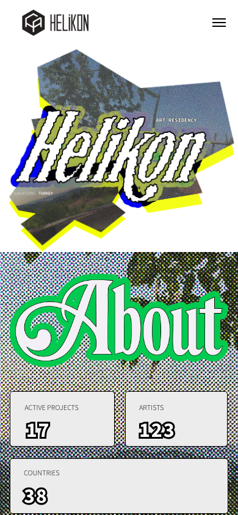
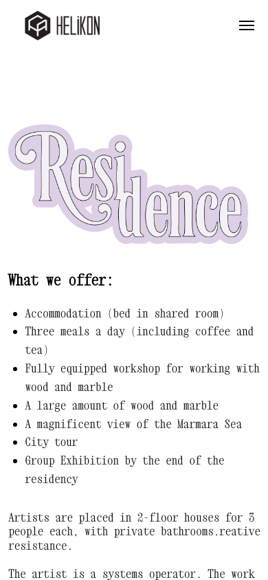

01 — Premise
Clarity without losing atmosphere.
Helikon Art Center is an artist-run space, so the digital experience had to feel open and self-possessed rather than overly institutional. The structure needed to carry several different tones at once: manifesto, residency logistics, archive material, and contact points for future participants.
The goal of the case was to keep that breadth readable — treating the site as one continuous system where navigation, typography, and pacing make the platform feel coherent from the first scroll.


